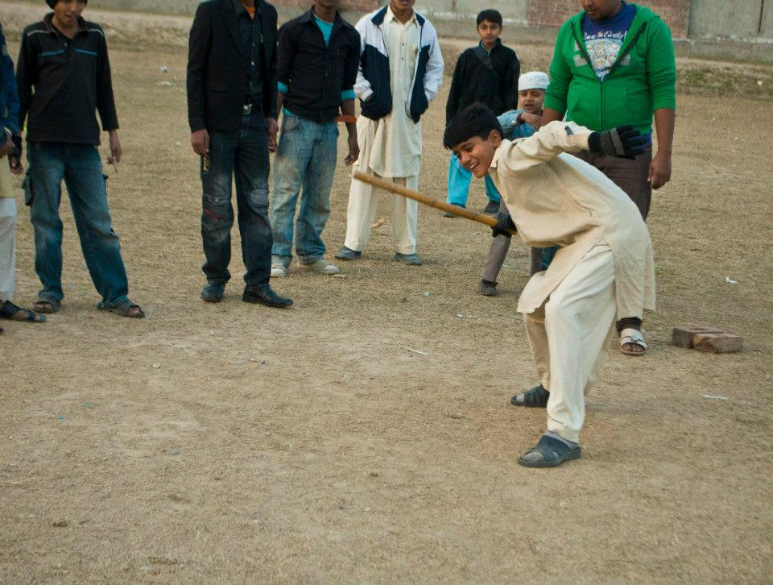

Gilli-Danda is an amateur sport played in the rural areas and small towns all over Bangladesh, India, Nepal, Afghanistan and Pakistan as well as Cambodia, Turkey and Italy. The game is played with two sticks: a large one called a danda, which is used to hit a smaller one, the gilli.
Gilli Danda is known by various other names: it is called Tipcat in English, Itti Dakar in Sindhi, Dandi-Biyo (डण्डी बियो) in Nepali, guli-badi (ଗୁଲି ବାଡ଼ି) in Odia (regional variations dabalapua ଡାବଲପୁଆ and ପିଲବାଡ଼ି pilabadi in Phulbani and guti-dabula ଗୁଟିଡାବୁଳ in Balasore) alak-doulak (الک دولک) in Persian, dānggűli (ডাঙ্গুলি) in Bengali & Assamese, chinni-dandu in Kannada, kuttiyum kolum in Malayalam, viti-dandu विट्टी दांडू in Marathi,Koyando-bal(कोयंडो बाल) in Konkani, kitti-pul (கிட்டி-புல்) in Tamil, Gooti-Billa or Karra-Billa or Billam-Godu or chirra-gonay (in Telangana) in Telugu, Gulli-Danda (ਗੁੱਲ਼ੀ ਡੰਡਾ) in Punjabi, Geeti Danna (گیٹی ڈنا) in Saraiki, Iti-Dakar (اٽي ڏڪر) in Sindhi, Lappa-Duggi (لپا ڈگی) in Pashto, Kon ko in Cambodian, Pathel Lele in Indonesian, syatong in Tagalog, awe petew in Ilonggo, and çelikçomak in Turkish.
Rules
"Gilli Danda" is played with two pieces of equipment - a danda, being a long wooden stick, and a gilli, a small oval-shaped piece of wood.
Standing in a small circle, the player balances the gilli on a stone in an inclined manner (somewhat like a see-saw) with one end of the gilli touching the ground while the other end is in the air. The player then uses the danda to hit the gilli at the raised end, which flips it into the air. While it is in the air, the player strikes the gilli, hitting it as far as possible. Having struck the gilli, the player is required to run and touch a pre-agreed point outside the circle before the gilli is retrieved by an opponent.
Variations
As an amateur youth sport, gilli-danda has many regional variations. In some versions, the number of points a striker scores depends on the distance the gilli falls from the striking point. The distance is measured in terms of the length of the danda, or in some cases the length of the gilli. Scoring also depends on how many times the gilli was hit in the air in one strike. If it travels a certain distance with two mid-air strikes, the total points are doubled.If the gilli is not struck far enough the player has to pick it up and try again.